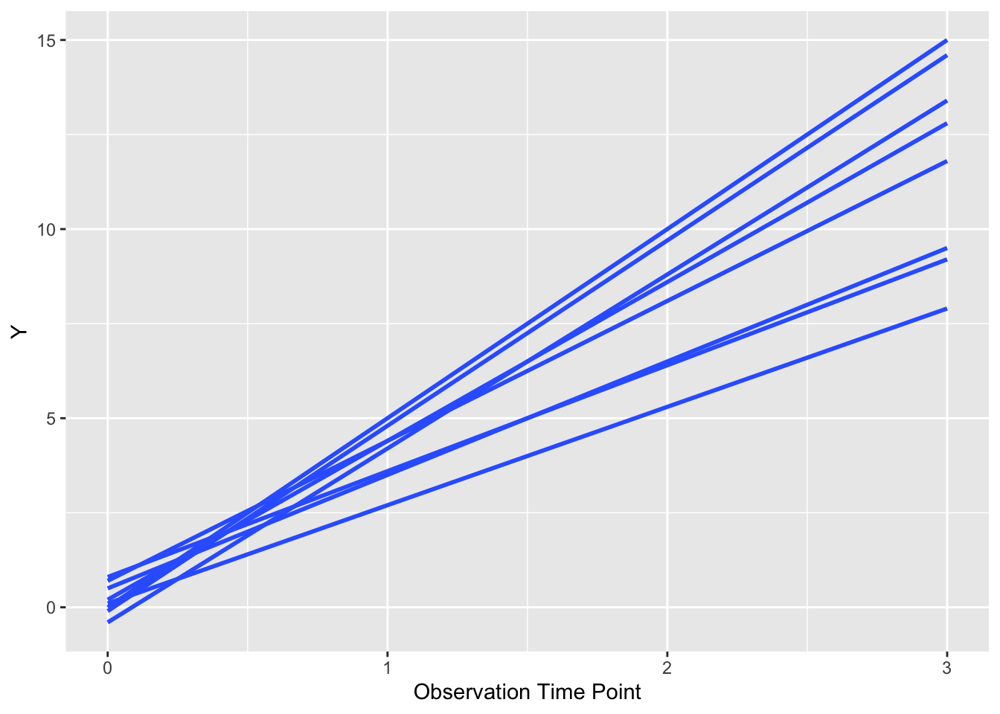

options(tidyverse.quiet = TRUE)
library(tidyverse)
dat <- tibble::tribble(~time, ~value, ~ses, ~elderly, ~pat_id, 0, 0, 1, 1, 1, 1, 3, 1, 1, 1, 2, 5, 1, 1, 1, 3, 8, 1, 1, 1, 0, 0, 2, 1, 2, 1, 4, 2, 1, 2, 2, 7, 2, 1, 2, 3, 9, 2, 1, 2, 0, 0, 1, 2, 3, 1, 5, 1, 2, 3, 2, 9, 1, 2, 3, 3, 11, 1, 2, 3, 0, 0, 2, 2, 4, 1, 5, 2, 2, 4, 2, 9, 2, 2, 4, 3, 15, 2, 2, 4, 0, 0, 1, 1, 5, 1, 5, 1, 1, 5, 2, 6, 1, 1, 5, 3, 9, 1, 1, 5, 0, 0, 2, 1, 6, 1, 5, 2, 1, 6, 2, 8, 2, 1, 6, 3, 13, 2, 1, 6, 0, 0, 1, 2, 7, 1, 4, 1, 2, 7, 2, 8, 1, 2, 7, 3, 14, 1, 2, 7, 0, 0, 2, 2, 8, 1, 6, 2, 2, 8, 2, 8, 2, 2, 8, 3, 16, 2, 2, 8)
ggplot(dat, aes(
x = time, y = value,
group = factor(pat_id)
)) +
geom_smooth(
formula = y ~ x, se = FALSE,
method = "lm"
) +
xlab("Observation Time Point") +
ylab("Y")